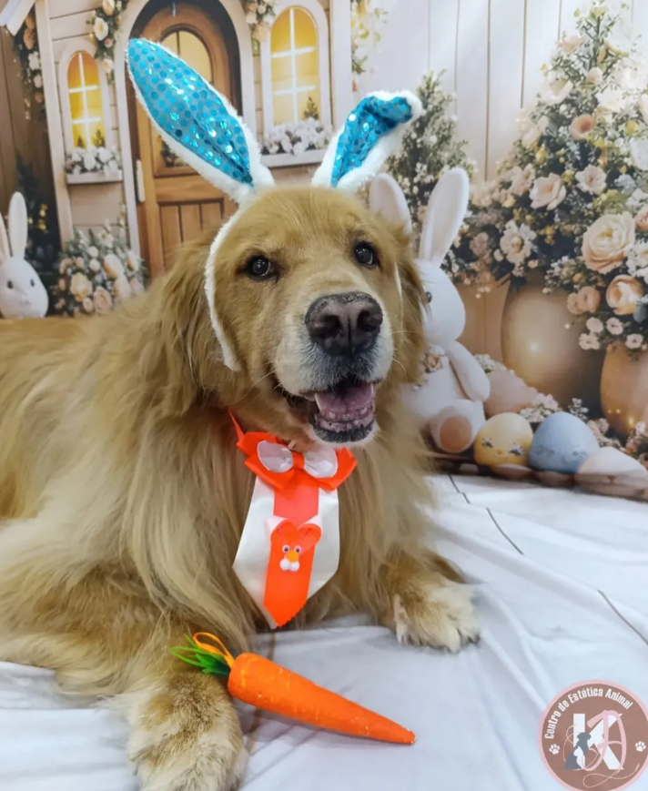
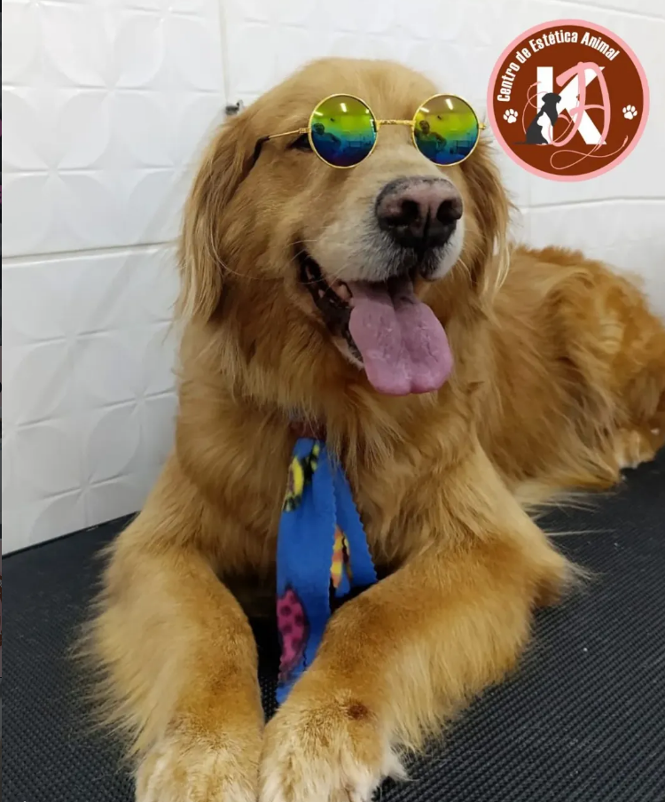
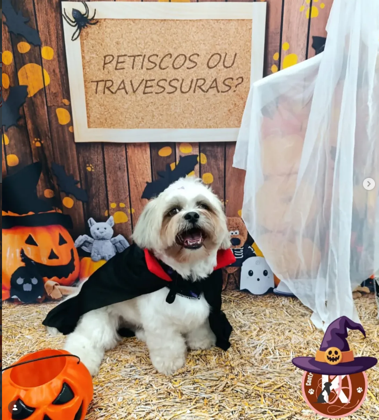
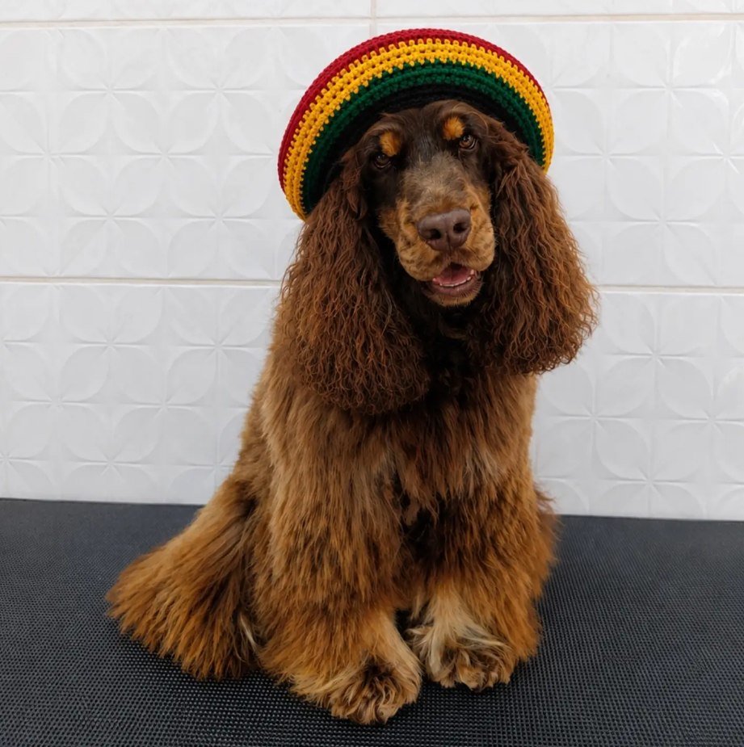
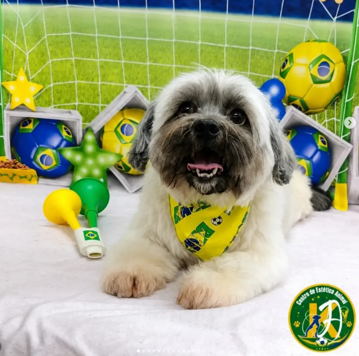

Título da Foto
Descrição do momento.
Com mais de 16 anos de experiência e amor à estética animal, Kátyla Andrade oferece uma experiência calma, carinhosa e individualizada. Aqui não há filas barulhentas: seu cão ou gato é atendido com tranquilidade e exclusivamente com horário marcado.
De experiência
Ambiente acolhedor
Ter a Sáb 08h-17h

Seu pet chega, é cuidado e não fica preso o dia todo.
Paciência com pets idosos, medrosos ou filhotes.
Toque suave, conversa tranquila e cosméticos nobres.
Horário reservado exclusivamente para você e seu pet.

❤️ Aqui cada pet é único. Não tratamos os animais como números em uma esteira de produção.
O Centro de Estética Animal Kátyla Andrade (CEA) nasceu com a missão de transformar o momento do banho e da tosa em um ritual calmo, seguro e relaxante. Com 16 anos de experiência técnica e paixão incondicional, entendemos a personalidade, a linguagem corporal e as necessidades especiais de cada peludo.
Sem barulho ensurdecedor de vários secadores ao mesmo tempo e sem animais agitados no mesmo espaço. Um ambiente calmo que transmite segurança ao pet.
Você agenda, traz o seu amigo no horário combinado e ele recebe atenção integral e exclusiva do início ao fim, sem esperas desnecessárias.
Linhas profissionais seguras para a pele e a pelagem dos cães e gatos, toalhas rigorosamente esterilizadas e equipamentos de ponta.
Confira fotos reais de alguns dos nossos amiguinhos atendidos com carinho, elegância e muita alegria no CEA Kátyla Andrade! Clique em qualquer foto para ampliar.



❤️ Onde cada pet é tratado com amor exclusivo
Somente com Horário MarcadoDescrição do momento.
Cada serviço é executado com técnicas modernas de embelezamento e respeito à morfologia de cada raça. Selecione o serviço desejado para solicitar seu agendamento.
Água em temperatura ideal, massagem calmante, xampus hipoalergênicos adequados ao tipo de pele e secagem suave com redução de ruído.
Modelagens sob medida que valorizam a estética do pet e preservam o conforto térmico e a higiene no dia a dia.
Técnica artesanal de alinhamento e retirada de excessos de pelos, preservando a textura natural e o padrão oficial da raça.
Nutrição intensiva dos fios com ativos emolientes, queratina e óleos que restauram fios ressecados e evitam novos nós.
Finalizações temáticas e graciosas com lacinhos artesanais, bandanas e adereços confortáveis que não repuxam a pele do pet.
Escovação profilática com dedeira ou escova macia e pasta enzimática com sabor agradável específica para uso veterinário.
Corte preciso respeitando rigorosamente o limite do leito ungueal vascularizado, finalizado com lixamento seguro para evitar arranhões.
Técnica de escovação profunda e descompactação (carding) que remove pelos mortos que causam calor excessivo e coceiras.
Mantenha a saúde e a higiene do seu pet sempre em dia com a nossa rotina de acompanhamento, garantindo horário prioritário fixo na semana.
A frequência ideal para pets que convivem dentro de casa e merecem estar sempre cheirosos, macios e sem nós.
Praticidade e constância na rotina do seu cão ou gato, mantendo a pelagem limpa e a saúde dermatológica em equilíbrio.
Preencha os dados abaixo e entraremos em contato imediatamente pelo WhatsApp para confirmar o melhor horário na agenda!
Saiba como funciona a nossa rotina de cuidados e por que o atendimento individualizado faz toda a diferença.
Atendemos de Terça-feira a Sábado, das 08:00 às 17:00. Domingo e Segunda-feira estamos fechados para descanso e higienização total do nosso espaço. Lembre-se: todo atendimento é realizado exclusivamente com horário marcado!
O horário marcado é o pilar fundamental do nosso ambiente sem estresse. Diferente de pet shops convencionais onde os animais chegam de manhã e passam horas confinados em caixas ouvindo latidos e secadores alheios, no CEA o seu pet chega no horário marcado, é atendido exclusivamente e já fica pronto para você buscá-lo com tranquilidade.
Com 16 anos de experiência, Kátyla Andrade tem o conhecimento e a paciência necessários para respeitar os limites de cada animal. Fazemos pausas quando necessário, utilizamos secagem com menor ruído, suporte anatômico suave e muito carinho para que o pet se sinta seguro e confortável em todas as etapas.
Sim! Os felinos são extremamente sensíveis ao ambiente e a cheiros estranhos. Por atendermos com horário reservado e sem a presença de cães agitados no mesmo espaço durante o manejo do gato, conseguimos realizar os procedimentos com muita calma e delicadeza.
O Trimming é uma tosa técnica e artística feita com tesouras especiais e ferramentas de alinhamento, sem raspar na máquina. É extremamente recomendada para raças de pelagem dupla e longa (como Golden Retriever, Cocker Spaniel, Spitz Alemão e Border Collie), pois remove o excesso de pelos sem danificar a proteção térmica natural da pelagem.
Os pacotes são a melhor forma de manter a higiene contínua e garantir o seu dia e horário fixos na semana sem preocupações com a agenda. Temos as modalidades Básica e Completa. Você pode solicitar uma conversa conosco pelo formulário ou WhatsApp para saber qual pacote melhor atende à pelagem do seu amiguinho.